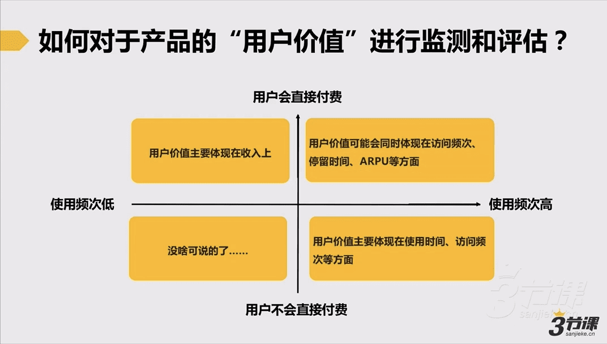
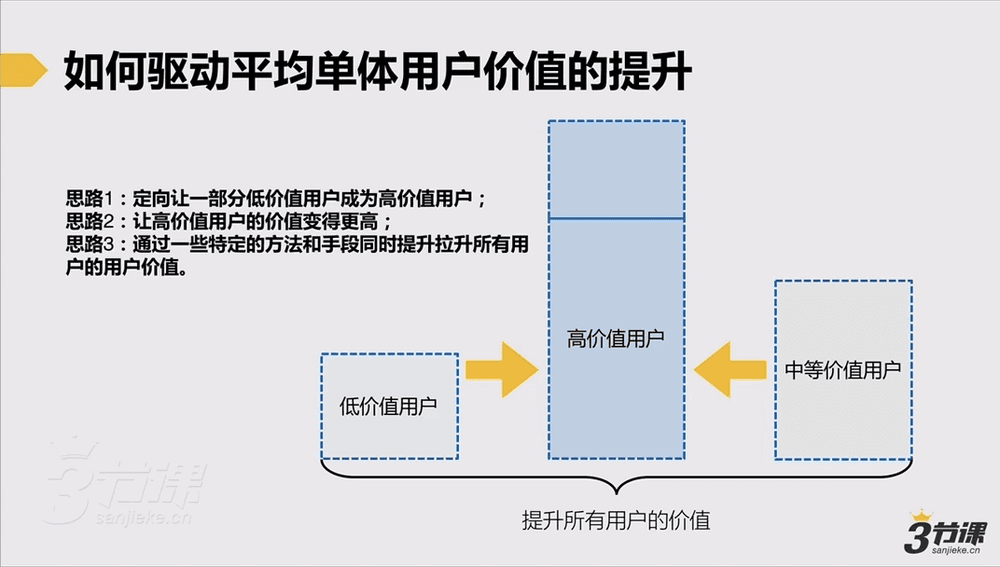
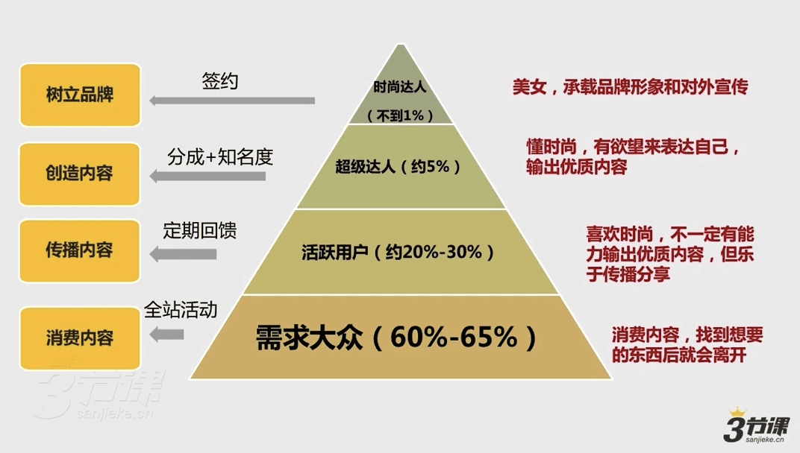
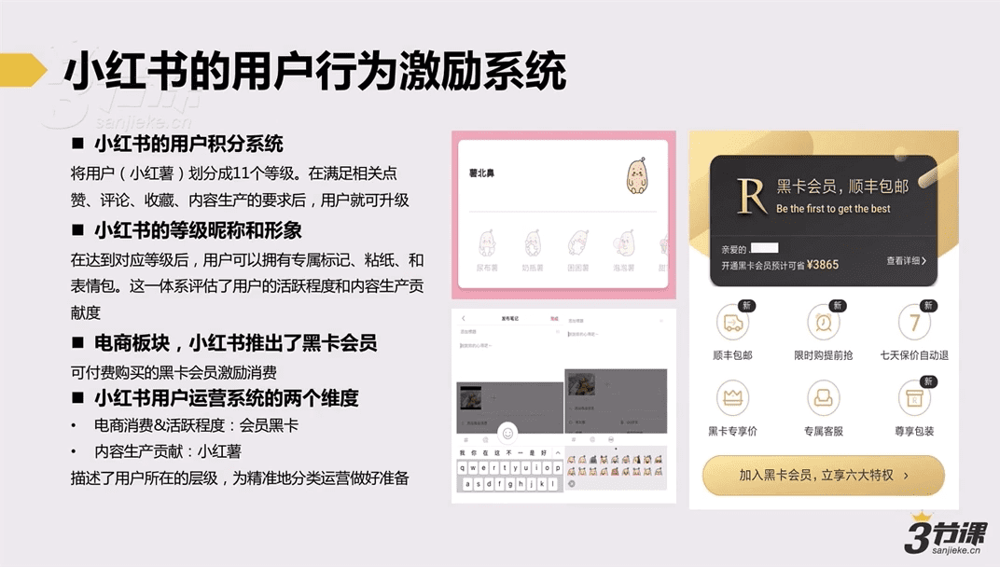
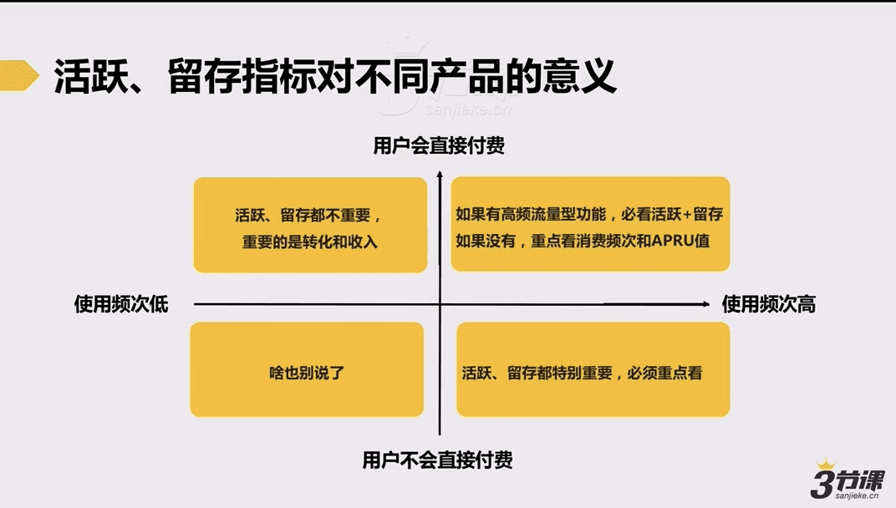

1讲 | 概述
1.1 理解用户运营与“大规模用户管理”的本质
我们到底该如何理解运营？
运营实际上是一个“销售岗+管理岗”
销售：
- 单点的用户获取
- 单点的收入增长
- 单个活动的效果
管理：
- 流量运营
- 渠道运营
- 店铺运营
- 用户运营
做好“用户价值管理”需要关注的本质问题
- 可监测可被评估：如何监测和评估一款产品的平均单体用户价值
- 可驱动可被影响：从哪些角度来驱动用户价值的提升？通过哪些方法和工具来影响用户价值的提升？
如何监测和评估

如何驱动和影响

两类可依赖的提升用户价值的方法
- 小规模：偏集中式运营，更多靠人肉、靠互动、靠情感，一般用于验证+重点用户的运营；
- 大规模：偏策略式运营，更多靠规则、靠机制、靠系统，一般用于做大体量用户的运营。
大规模用户运营的初阶状态和高阶状态
初阶：关注表层、单点（依靠人为完成）
- 提升用户留存率
- 用户促活
- 用户召回&唤醒
高阶：关注内核、体系搭建（依靠机制、系统完成）
- 用户运营模型梳理+用户运营体系的搭建（大量策略）
1.2 大规模用户运营体系的3个子系统
什么是“用户运营体系”？
首先我们得知道面向大规模用户的运营，存在哪些常见的系统（或较为成熟的工作方法）可以为我们所用。
大规模用户运营中的三大子系统（工作方法）
- 用户生命周期管理
- 用户分层（分类）运营系统
- 用户行为激励系统
以上三大系统均可独立应用，且均可对于一款产品的用户价值提升起到显著作用。
用户生命周期管理系统
对站内海量数据样本进行分析，界定出一个用户从接触产品到最后放弃产品的典型周期，并定义出关键节点和关键用户行为，做好相应的预警和干预。
用户分层（分类）运营系统
按照站内用户的贡献度、用户角色、喜好等对于用户进行划分，定义好用户角色，并给面向不同用户制定针对性的运营策略，以及提升平均用户价值。通常要重点做好核心高价值用户的维系。

用户行为激励系统
竞争或优势
- 竞争图谱
- 排行榜
荣誉或身份
- 等级权益
- 成就勋章
- 标签
- 称号
特权或权益
- 权益池
- 积分兑换
- 红包、礼品、福利等

总结
所有大用户体量的产品都可能需要用到上述方法中的一种或者多种来进行用户管理，同一种系统在不同产品的表现可能会不同。
上述三大子系统，即可独立应用，也可复合应用。

1.3 关于留存、促活与召回
- 留存：增加首次使用后此后还会继续使用的用户比例；核心指标：次日留存、7日留存、30日留存等；
- 促活：增加目前用户的活跃度，如提升访问时间、发帖量等；核心指标：通常把每日有访问定义为一个有效的DAU用户；
- 召回：通过有效信息触达手段推送信息给已经流失的用户，引导用户重新完成访问或使用；核心指标：召回用户数。
所有产品都需要关注留存、活跃吗？
猫眼电影用户次日留存很差，要不要管？世纪佳缘用户活跃度很差，要不要管？
留存&活跃指标对不同产品的意义

如何判断该以多长时间周期来关注留存问题
用户可能会因为哪些原因留存率低
- 产品价值不足/不明确or服务能力不足 → 设定服务边界or快速探索稳定的产品价值点
- 未能引导用户去体验到产品的核心服务或核心价值，让用户惊喜
- 用户不匹配 → 调整推广策略or产品机制
围绕产品核心价值提升留存的3种核心思路
- 功能/服务留存：找到实现用户留存的功能点，通过强化、补贴方式吸引用户使用
- 内容留存：发现+创造优质内容，并做好优质内容的推送
- 社交/互动留存：帮助用户缔结更多有效的关系或制造更多的互动
** 分析&提升用户留存的基本操作步骤 **
- 明确要重点看的留存指标颗粒度
- 找到可能影响留存的元素，进行对比分析（分别从时间、功能、内容或互动行为差异等维护入手进行数据对比，进行分析）
- 完成数据分析，找到线索，制定运营方案or策略，强化有效线索
案例：多米音乐的留存提升分析思路
- 基于时间：发现数据中某两天的次日留存率较低 → 挖掘用户属性及行为数据
- 基于功能：点击「喜欢」大于三次留存率较高 → 点击「喜欢」小于三次的留存率如何？
- 综合分析：点击「喜欢」大于三次，加入一个兴趣社区 → 点击「喜欢」小于三次且无社区留存率如何？
如何提升活跃？
- 放大活跃抓手：找到那些一定能够帮助用户活跃的功能点，并加强引导；常见：关系链、内容匹配、爆点功能/服务/话题等；
- 用户激励：针对我们希望发生的用户行为进行激励；
- 周期性活动：定期举办活动刺激用户参与，以便于用户更好养成使用习惯和依赖。